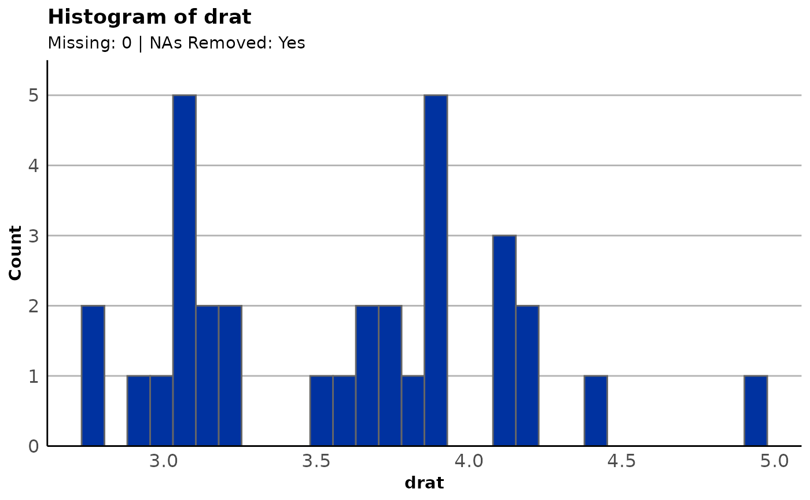
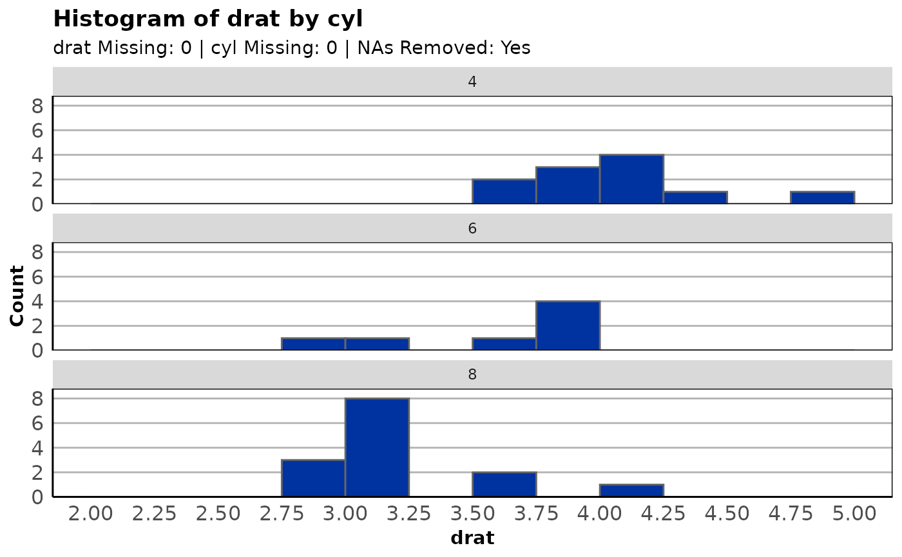
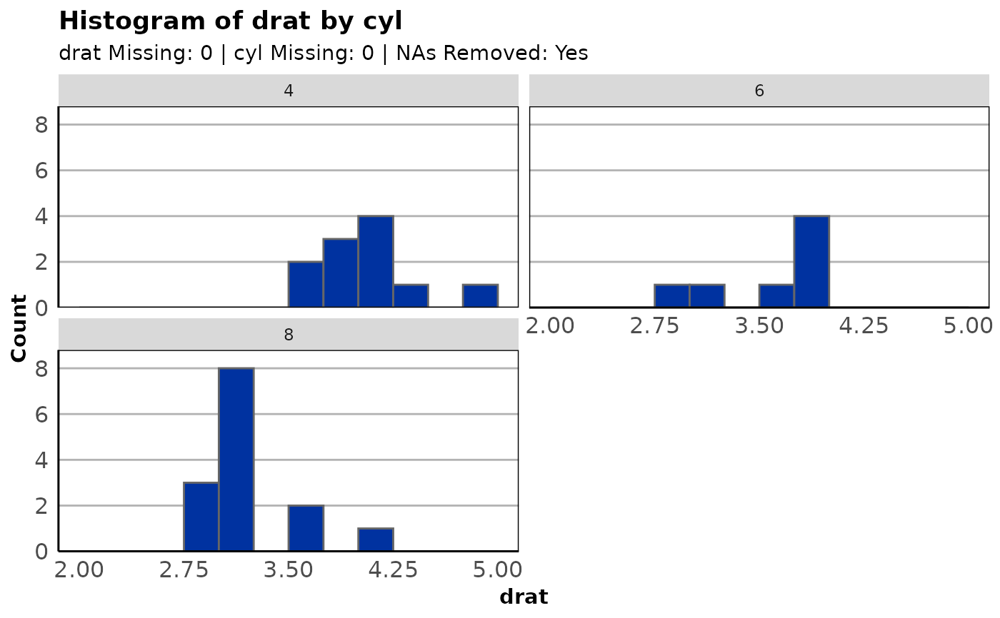
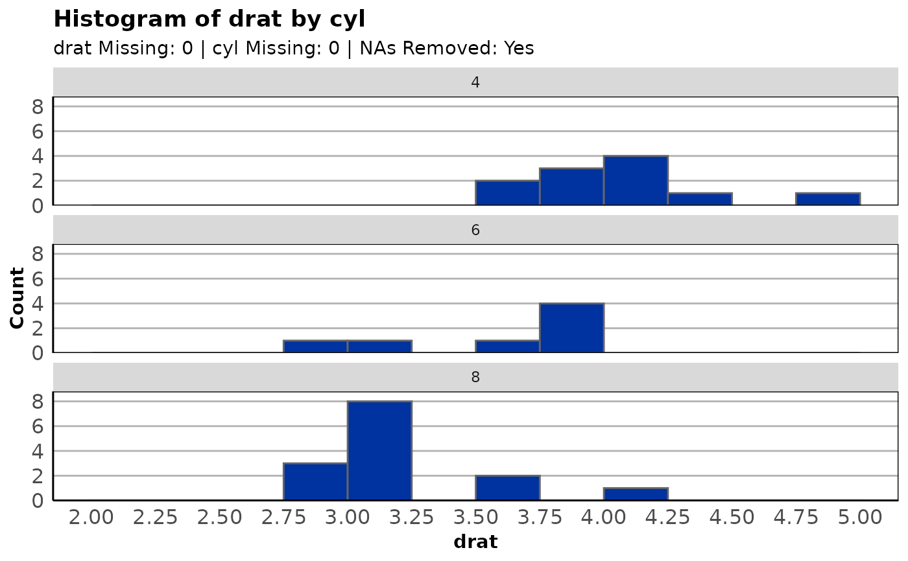
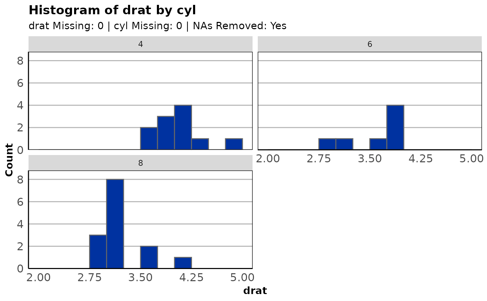

plot_hist() builds a histogram on one variable alone or grouped by a single, categorical grouping
variable. The number of grouped plot columns can be adjusted based on the levels of the
grouping variable.
Default histograms will likely not show your data in the best way (the function will warn you of this
once per session). To remedy this, use the breaks argument. The values given in the vector should
all be numbers. The first number is the minimum value you want displayed, the second is the maximum
value to display, and the third is the "step" distance.
Usage
plot_hist(
data,
formula,
fill = "#0032A0",
breaks = NULL,
group = NULL,
group_cols = 1,
title = NULL,
subtitle = c("show", "hide"),
...
)Arguments
- data
A data frame.
- formula
The variable to tabulate. Should be given in formula notation,
~var.- fill
The fill color of the bins, entered as a character.
- breaks
A use of the
seqfunction (start, stop, step) specifying how the x-scale should be broken up. A good default is provided based on the range and values of the data.- group
A grouping (faceting) variable entered in formula syntax,
~group_var.- group_cols
The number of columns to make in a grouped (faceted) plot. Defaults to 1 (stacked vertical plots).
- title
An override for the title of the plot. A sensible default is provided.
- subtitle
A switch for hiding the default subtitle. One of "show" or "hide".
- ...
Extra title arguments passed on to
ggformula::gf_labs()(which feeds toggplot2::ggplot()).
Examples
plot_hist(mtcars, ~drat)
#> ! No value for breaks supplied. Your histogram may not show your data accurately.
#> Note: NAs always removed for histograms
#> This message is displayed once per session.

plot_hist(mtcars, ~drat, breaks = seq(3, 6, 0.5))
 plot_hist(mtcars, ~drat, breaks = seq(1, 6, 0.5), fill = "red")
plot_hist(mtcars, ~drat, breaks = seq(1, 6, 0.5), fill = "red")
 plot_hist(mtcars, ~drat, group = ~cyl, breaks = seq(2, 5, 0.25))

plot_hist(mtcars, ~drat, group = ~cyl, breaks = seq(2, 5, 0.25), group_cols = 2)

plot_hist(mtcars, ~drat, group = ~cyl, breaks = seq(2, 5, 0.25))

plot_hist(mtcars, ~drat, group = ~cyl, breaks = seq(2, 5, 0.25), group_cols = 2)
